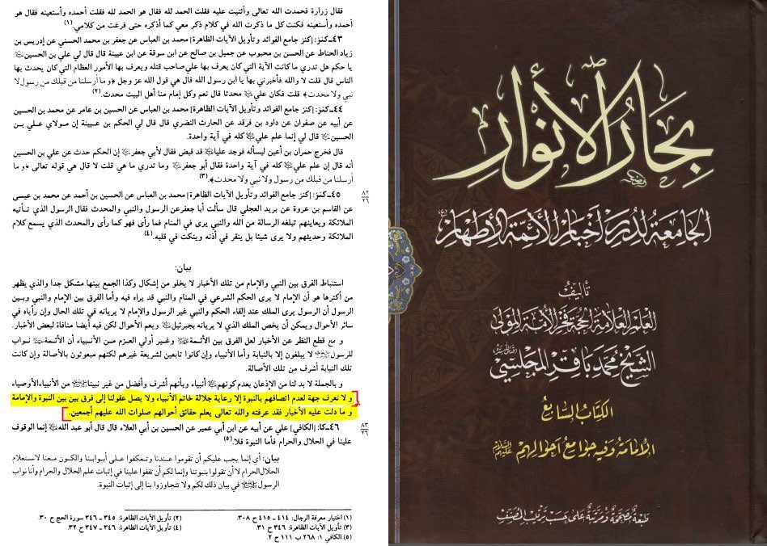
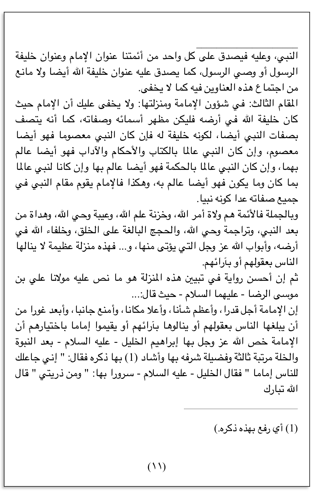
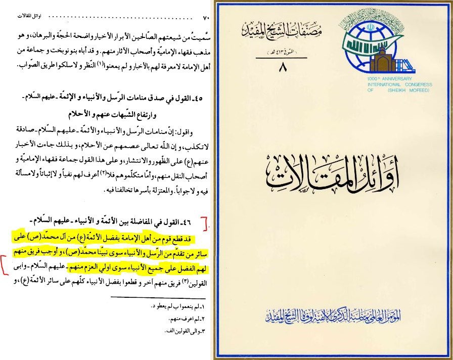
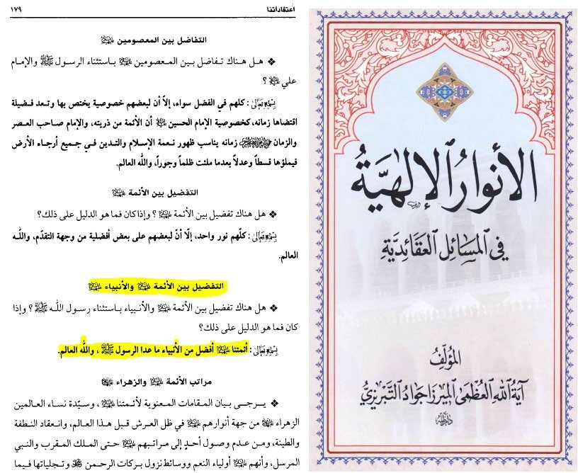
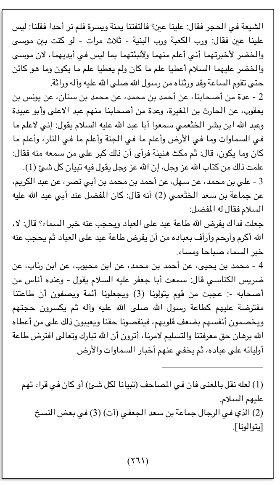
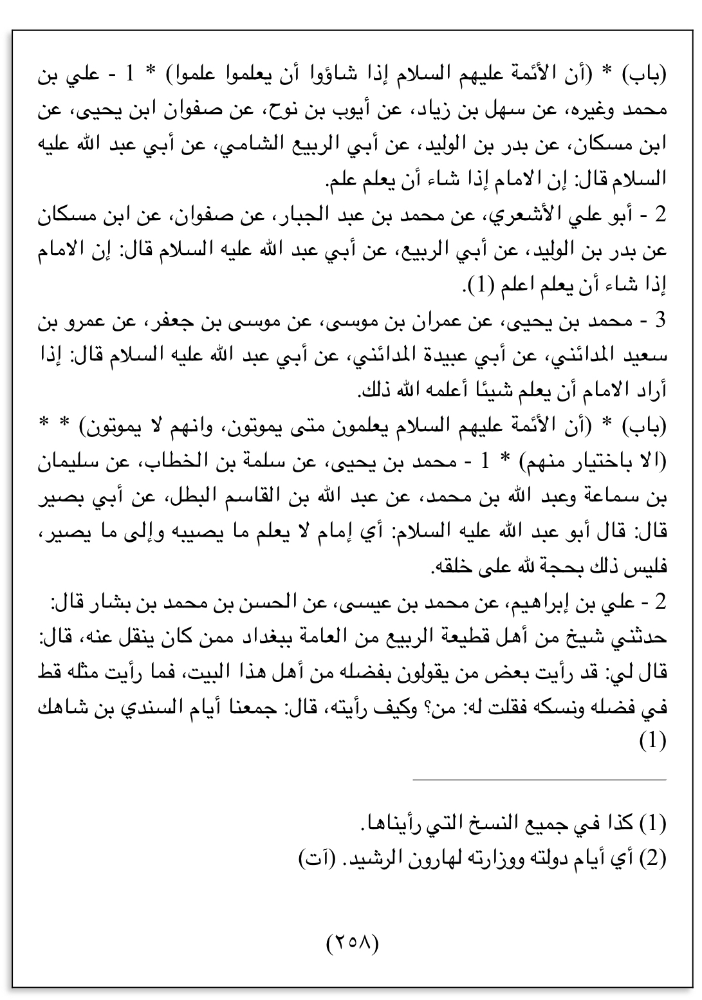
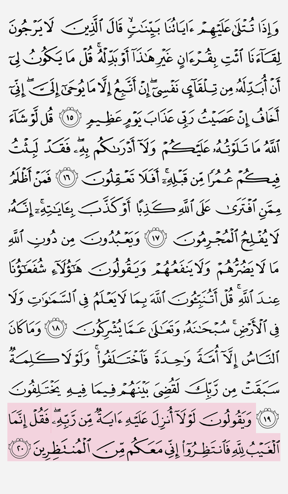

ولا نعرف جهة لعدم اتصافهم بالنبوة إلا رعاية جلالة خاتم الانبياء ، ولا يصل عقولنا إلى فرق بين بين
النبوة والامامة ، وما دلت عليه الاخبار فقد عرفته ، والله تعالى يعلم حقائق أحوالهم صلوات الله عليهم أجمعين
To our knowledge there is no reason not to describe the Imams as Prophets except consideration to the status of the Final Prophet.
Our intellect too, cannot perceive a distinction between Nabuwwah prophethood and Imamah (Source: Bihar Al-Anwar, Volume 26, p.82)

the Imam has the qualities of the prophet as well because he’s his successor, so if the prophet was infallible then he also is infallible and thus the
Imam takes the place of the prophet in all of his qualities except he isn’t a prophet
So the according to the Shias the only difference between the prophets and imams is the title prophets other then that either the imams
are greater then the prophets or they are equal

The consensus of the Imami Shia have agreed about the superiority of the Imams of Muhammad (SAWS)
over all prophets and messengers except Prophet Muhammad SAWS

[Our Imams are better than the prophets except for our Prophet SAW]
So they agree there is no reason to have a prophet if these humans are greater then prophet whom god give miracles and
wonders and revelations and whom were all mentioned in the Quran the holy words of god


Imam Abu Abdullah said I have a knowledge about what in the heavens and what is in the earth,
what in the paradise and what is in the fire,
and I know what was before and what is going to happen]

وَیَقُولُونَ لَوۡلَاۤ أُنزِلَ عَلَیۡهِ ءَایَةࣱ مِّن رَّبِّهِۦۖ فَقُلۡ إِنَّمَا ٱلۡغَیۡبُ لِلَّهِ فَٱنتَظِرُوۤا۟ إِنِّی مَعَكُم مِّنَ ٱلۡمُنتَظِرِینَ ﴿ ٢٠ ﴾
• Dr. Mustafa Khattab:
˹O Prophet,˺ The knowledge of˺ the unseen is with Allah alone.
Yunus, Ayah 20
These people also attribute godly attributes to humans, so apparently these people are gods
as well if they have attributes which God alone has